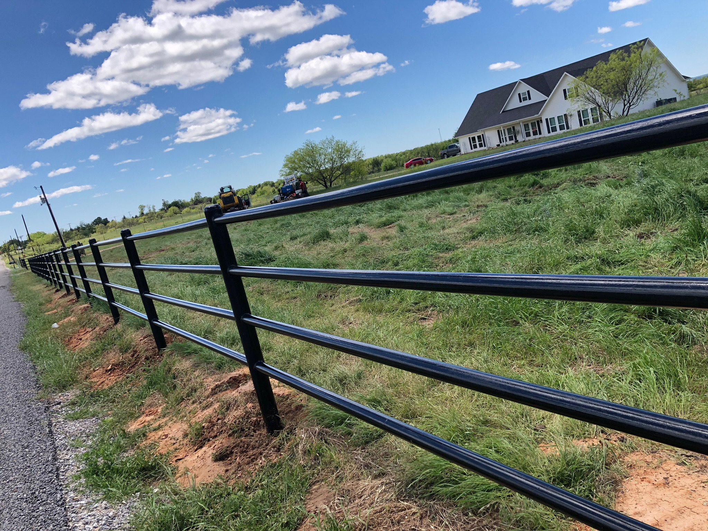

Commercial Fencing
Durable fencing for businesses, shops, yards, equipment areas, and commercial properties.
Fence Contractor Sherman TX
Leatherneck Welding builds pipe fencing, custom gates, perimeter fencing, commercial fencing, and fence repairs for Sherman homes, shops, businesses, and acreage properties.

Sherman has a strong mix of residential growth, commercial properties, shops, equipment yards, and nearby acreage. That means fencing needs to be clean, secure, durable, and practical.
Whether you need a pipe fence, commercial perimeter fence, custom entry gate, privacy fence, or repair work, Leatherneck Welding builds fence systems designed to hold up in North Texas.
We serve Sherman, Whitesboro, Gainesville, Denison, Collinsville, Sanger, Denton, and surrounding North Texas communities.
We regularly review projects outside these areas.Durable fencing for businesses, shops, yards, equipment areas, and commercial properties.
Heavy-duty pipe fencing for acreage, entrances, long fence lines, and property boundaries.
Driveway gates, access gates, entry gates, and gate upgrades built to match your fence system.
Clean, strong fence lines for residential, commercial, and rural properties.
Privacy and security-focused fencing for homes, backyards, shops, and property lines.
Repairs for damaged posts, sagging gates, broken corners, braces, and worn fence sections.
We build fencing with a focus on strength, clean appearance, and practical use. From commercial fencing to custom gates and acreage fence lines, the goal is to build it right so it lasts.
Project photos will be added here as Sherman-area fence projects are completed.


Yes. Leatherneck Welding provides fence installation, custom gates, pipe fencing, commercial fencing, perimeter fencing, and fence repair in and around Sherman.
Yes. We build fencing for shops, businesses, yards, equipment areas, and commercial properties depending on the project scope.
Yes. We build custom driveway gates, access gates, entry gates, ranch gates, and gate upgrades designed to match the fence line.
Yes. We serve surrounding North Texas communities and regularly review projects outside the listed service areas.
Send us your project details, photos, or rough layout and we’ll help you get started.